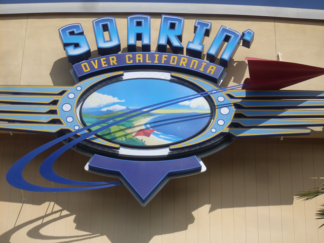
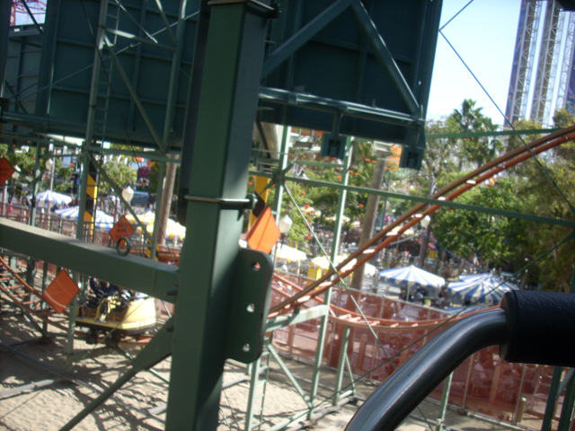
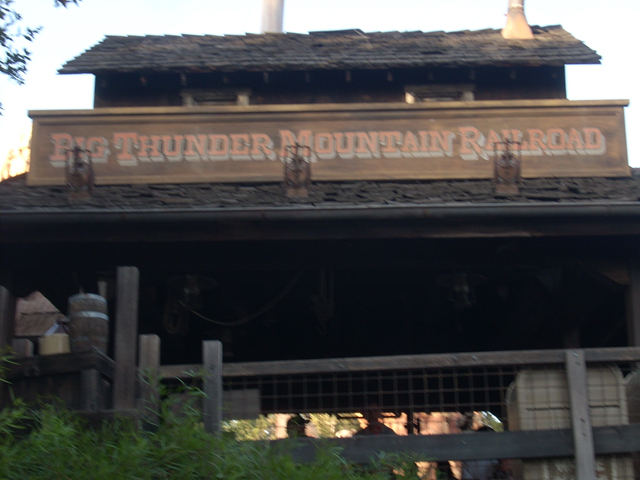

Fall 2008 Photos
Disneyland ResortSanta Monica Pier Six Flags Magic Mountain
Once again, I apologize about the updates coming SO late, but sudden computer switches and crashes have slowed me down quite a bit. Anyways, this is our yearly Fall "Insert Year here" Photos update. This year, we'll be starting at the Disneyland Resort.

First ride of the day, Soaring over California. It was quite enjoyable as always.
I hit the gyser on Grizzly and got SO SOAKED!!!! (If you need proof, look closely at her shirt. You should be able to see water drops.)
Dude, by now, you should know that we order our cheesebread every single time we come to this place. So there's no reason to photograph us making the damn cheesebread!
As you can see, construction has definetly improved since our last visit.
 Yay! Our first coaster of the update is indeed Mulholland Madness.
Yay! Our first coaster of the update is indeed Mulholland Madness.

Mulholland Madness is quite a good Wild Mouse, as it is trimless and free of any banking.
 Although it's still not anywhere near as good as the other coasters we'll ride on this trip.
Although it's still not anywhere near as good as the other coasters we'll ride on this trip.
Unfortunetly, no update can be complete without a tragedy. Today, we lost Burger Invasion. While it was never recognized by Incrediblecoasters, I hope that the Burger Invasion resteraunt will do well in resteraunt heaven. R.I.P Burger Invasion (2001-2008)
Oh yeah. There's a brand new ride here at the Disneyland Resort. Toy Story Mania has opened since we last went. I'm happy to say that it's a much better ride than Buzz Lightyear and ALOT of fun. (As you can see in the picture.)
I just LOVE the Toy Story Mania Merchandise.
If you even think about criticizing Toy Story Mania, my finger might just slip, pull the trigger and cause your untimely death.
Toy Story Mania may be fun, but California Screamin is without a doubt, the star attraction @ the Disneyland Resort.
 It's hard to believe it's almost been a year since I last rode Good Tower of Terror.
It's hard to believe it's almost been a year since I last rode Good Tower of Terror.
*Sigh* Once again, I got dragged on Nemo by Celeste & Emily, and once again, I got totally bored.
 Yay! We're going to go on a good ride!
Yay! We're going to go on a good ride!
Never Mind. The ride vallyed at the end of the course and those nice, friendly, and sensible ride operators had to push them up the last hill and let the car roll into the watersplah! (I'm still kicking myself in the balls for not filming that.)

Matterhorn may be down for the day, but there's always Big Thunder Mtn.
 Yummy Mine Train Goodness.
Yummy Mine Train Goodness.
We decided to ride the Haunted Mansion to show our Halloween Spirit.
"GRR!!! I'M TYPING TOO FAST TO THINK OF A CAPTION!!! GIMME SOME CANDY!!!!
 It's Christmas already. Holy S**t, I haven't even gotten anyone their present!!! Oh well. I would've gotten them a small gumball or an expired orange juice coupon anyways.
It's Christmas already. Holy S**t, I haven't even gotten anyone their present!!! Oh well. I would've gotten them a small gumball or an expired orange juice coupon anyways.
Oh yeah. One quick thing. It was CROWDED AS FREAKING HELL TODAY!!!!
Santa Monica Pier
Home